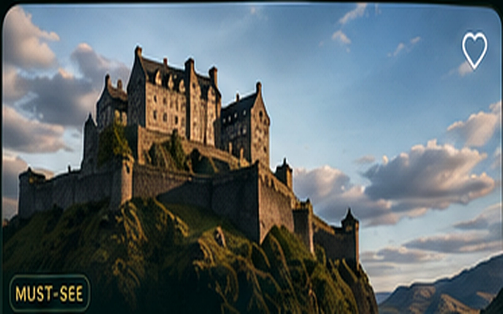
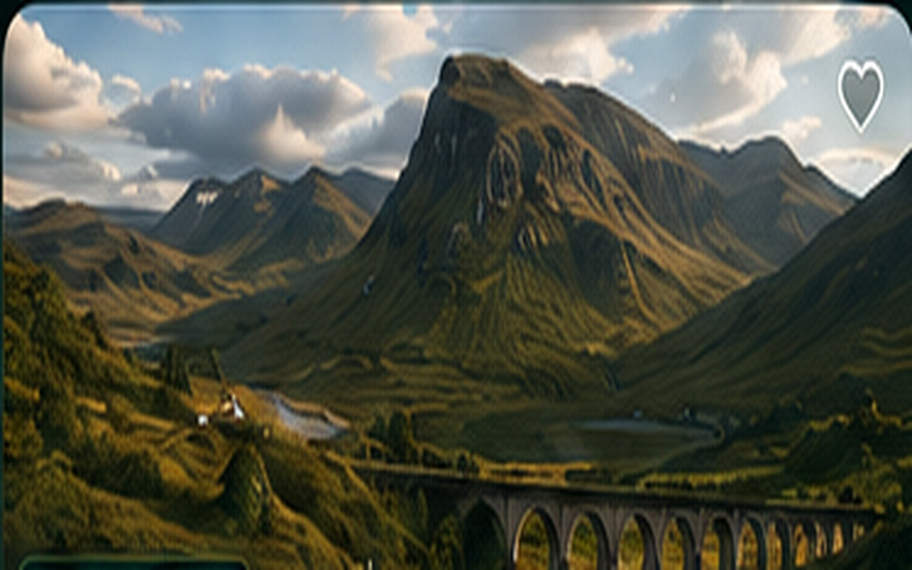
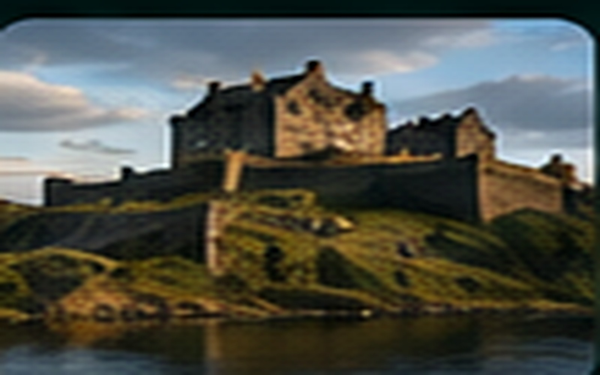
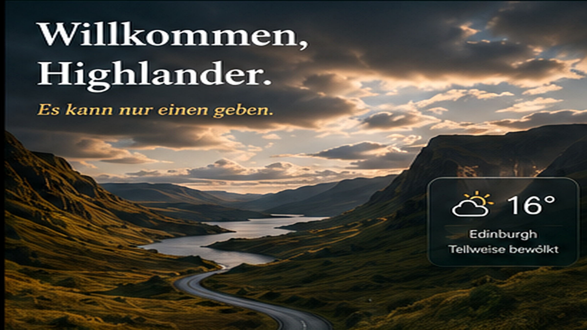
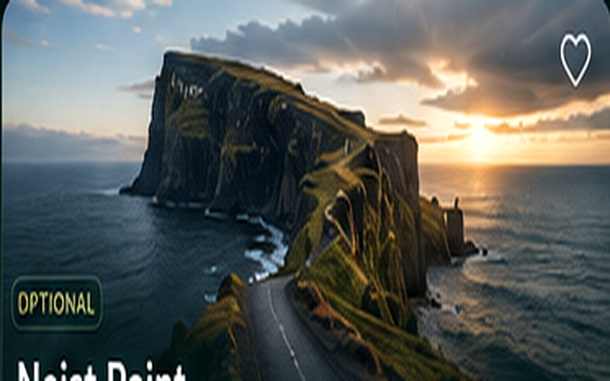

REISESTATUS
Vorfreude
Während der Reise erscheint hier automatisch der aktuelle Tagesplan.
EDISKYEGLA
Dein persönliches Reise-Cockpit für Route, Fotografie, Genuss und Budget – vollständig offline vorbereitet.
Während der Reise erscheint hier automatisch der aktuelle Tagesplan.
Passend zu Route und Stimmung.
— Charlie
In den Highlands entscheidet die sichere, entspannte Route – nicht die Zahl der Programmpunkte.
Alle 15 Tage als elegante, aufklappbare Timeline.
Alle Sehenswürdigkeiten offline anklickbar. Verschieben, zoomen, filtern und Details öffnen.
Tippe auf einen nummerierten Punkt, um Name, Region, Fototipp und den Kartenlink zu sehen.
Sehenswürdigkeiten und Fotospots in einer gemeinsamen, fotografischen Übersicht.

Licht, Wetter und sicheren Stand vor Ort prüfen.
Früh am Morgen fotografieren; vom Kanal aus entstehen starke Spiegelungen und seitliche Perspektiven zeigen die monumentale Größe.
Zur Öffnung kommen. Im Palasthof symmetrisch arbeiten und anschließend den weiten Blick über Stirling aufnehmen.

Teleobjektiv für gestaffelte Berge und Moorflächen; nur in einer legalen Parkbucht halten.
Nach Regen besonders eindrucksvoll. Längere Belichtung nur von sicherem Standpunkt und niemals von der Fahrbahn aus.
Hochformat betont die Höhe der Berge; dramatisches Licht entsteht oft direkt nach einem Regenschauer.
Weitwinkel für den Taleingang, Tele für Felsdetails. Der Aufstieg ist anspruchsvoller als ein kurzer Aussichtsstopp.
Wetterwechsel bewusst nutzen: tiefe Wolken, Lichtfenster und nasse Felsen erzeugen die stärkste Highland-Stimmung.
Straße und Fluss als führende Linien einsetzen. Rücksicht auf Anwohner und ausschließlich erlaubte Haltepunkte nutzen.
Für die klassische Viaduktansicht ausreichend Zeit für den Fußweg einplanen; Zugzeiten vorab prüfen.
Die Kirche mit Loch Shiel und Bergen im Hintergrund fotografieren; ruhige, respektvolle Perspektiven wählen.

Vom Ufer und von der Brücke fotografieren; bei ruhigem Wasser Spiegelungen suchen und Gezeiten beachten.
Dorf, Hafen und Eilean Donan gemeinsam als ruhige Highland-Szene komponieren; Morgen- oder Abendlicht bevorzugen.

Sehr früh starten. Seitliches Morgenlicht modelliert die Felsnadeln; Wind und nasse Wege einkalkulieren.

Weitwinkel für Klippen und Wasserfall; Kamera wegen Gischt und starkem Wind gut schützen.
Früh kommen und natürliche Formen respektieren. Mit leichtem Tele lassen sich Hügel und Wege verdichten.
Früher Morgen oder später Nachmittag. Weitwinkel für die Gesamtlandschaft, Tele für gestaffelte Formen.
Ruinen nur aus sicherer Distanz fotografieren; Küstenlinie und dramatischer Himmel wirken besonders stark.
Später Nachmittag bis Abend. Genügend Zeit für den Rückweg einplanen und Abstand zu ungesicherten Klippen halten.
Nachmittag oder Abend. Schwarze Steine, Brandung und Klippen als starke Vordergrundelemente nutzen.
Straßenkehren als führende Linie verwenden; 24–35 mm für die Gesamtlandschaft, 70–200 mm für Bergstaffelungen.
Boote, Ufermauer und Häuser als Vordergrund für den Blick über den Inner Sound verwenden.
35–70 mm für Loch und Bergmassiv; 70–200 mm für gestaffelte Gipfel.
Vor dem Burgbesuch zuerst den nördlichen Küstenpfad laufen; Weitwinkel für Gesamtansicht, Teleobjektiv für Brandung und Details.
Abendlicht und Straßenbeleuchtung sorgen für stimmungsvolle Stadtaufnahmen.
Restaurants, Spezialitäten und Reservierungen.
Buchungen und Reservierungen abhaken.
Alle Übernachtungsorte auf einen Blick.
Deine Auswahl bleibt auf diesem Gerät gespeichert.
Sämtliche Reiseausgaben erfassen, auswerten und sichern.
Noch keine Ausgaben erfasst.
Gleichmäßig auf vier Reisende gerechnet.
Ausgaben des ausgewählten Tages.
Alle Felder außer Notiz sind für eine saubere Abrechnung gedacht.
Filter, bearbeiten oder löschen.
Die Daten liegen nur auf diesem Gerät. Regelmäßig sichern.